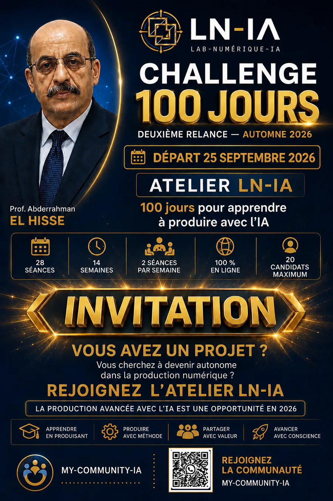
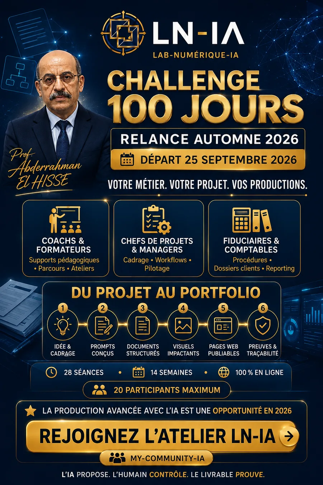

Pratiquer
Installer un rythme régulier et sortir de l’usage occasionnel.
Départ vendredi 25 septembre 2026
14 semaines pour apprendre l’IA par la pratique, produire avec méthode et devenir autonome.
Les horaires précis, conditions et tarifs seront communiqués lors de l’échange préalable.

Pourquoi 100 jours ?
Une compétence durable ne se construit pas en une seule démonstration. Le Challenge donne le temps de comprendre, produire, corriger, documenter et présenter.
Installer un rythme régulier et sortir de l’usage occasionnel.
Transformer chaque apprentissage en un livrable concret.
Corriger les versions et documenter les décisions.
Assembler les résultats dans un portfolio professionnel.
Pour qui ?
Coachs, formateurs et enseignants.
Chefs de projets, managers et professionnels.
Porteurs de projets et entrepreneurs.
Étudiants motivés et membres de la communauté.
Format de la session
Deux rendez-vous hebdomadaires structurent la progression : cadrer les notions, puis les transformer en productions contrôlées.

Le programme
Définir son objectif et son point de départ.
Transformer une intention en consigne contrôlable.
Produire des contenus structurés et utiles.
Adapter un message au canal et au public.
Organiser une idée en page publiable.
Classer, versionner et rendre le projet compréhensible.
Transformer la progression en preuves présentables.
Méthode LN-IA
L’IA propose. L’humain contrôle. L’atelier organise. Le livrable prouve.
Livrables concrets
Prompts structurés, prompt maître et grilles de contrôle.
Fiches projet, guides et documents professionnels.
Messages, publications et supports visuels.
Pages, mini-sites et bases PWA.
Workflows, README, Git et portfolio de preuves.
Productions et preuves
Une sélection courte issue du portfolio public. Chaque exemple relie une compétence à une production réelle.


À la fin du parcours
Accompagnement et validation
Le participant ne reste pas seul face à l’outil. Les productions sont relues, corrigées, classées et reliées à des preuves. L’IA assiste ; le participant explique ; le pilote humain contrôle et valide.
Conditions et candidature
La progression demande de la régularité, de la disponibilité et un projet concret à faire avancer.
Conditions et tarifs communiqués lors de l’échange préalable.
Rejoindre My-Community-IAQuestions fréquentes
Non. Le parcours commence par le cadrage, les prompts et les documents, puis introduit progressivement les pages web et les workflows.
Non. Il faut surtout être prêt à pratiquer régulièrement, contrôler les réponses et corriger ses productions.
Pour installer une pratique, produire plusieurs versions et construire une autonomie durable.
Des prompts, documents, supports visuels, pages web, workflows et un portfolio de preuves.
Le lundi sert à comprendre et cadrer ; le vendredi à pratiquer, produire et corriger.
Par des livrables réels, des corrections documentées, un portfolio et une soutenance.
Le bouton My-Community-IA ouvre la communauté publique WhatsApp.
Rejoignez la communauté pour recevoir les prochaines informations. Les conditions détaillées seront communiquées lors de l’échange préalable.
Prochaine étape